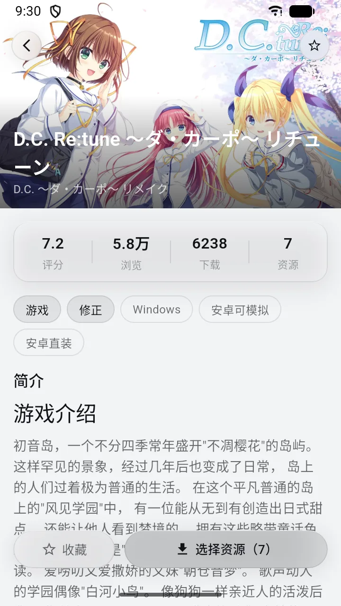
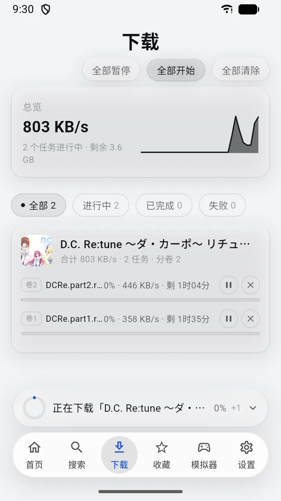
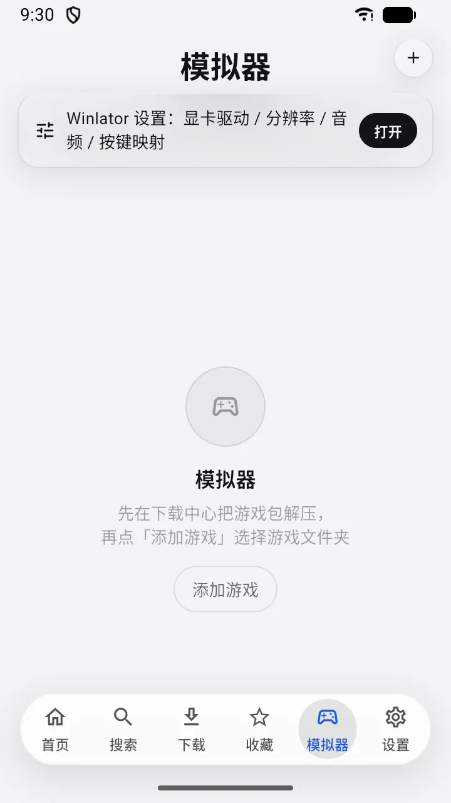
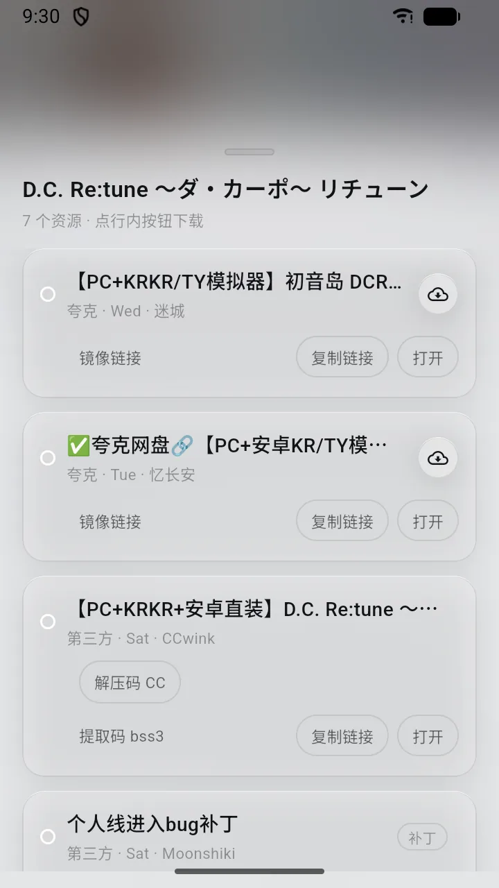
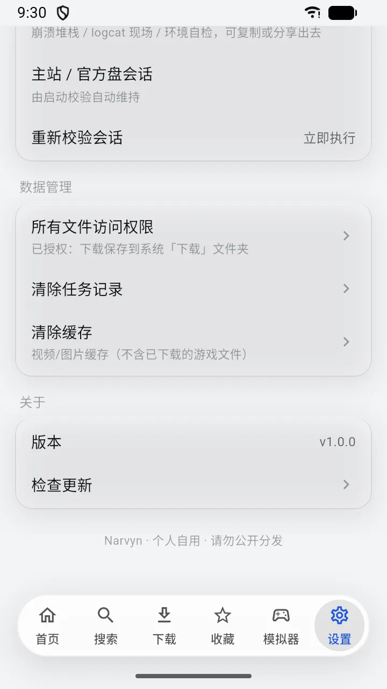

特性
一件主业的背后，
一件主业的背后，
是六件替你做好的小事。
不堆功能清单，只留真的每天在用的那几个。
秒开首页
上次看到的那一屏，重新打开就在原地，不用再盯着加载。
分段多连接
一个文件拆成多段同时拉，Wi-Fi 能跑多满就跑多满。
断点续传
暂停、断网、杀进程都不白跑，回来从断的地方接着下。
原地解压
7z / zip / rar 下完直接解进游戏目录，不用另装解压 App。
夸克直连
登录一次夸克，分享链接转存直下，下完自动清掉副本。
内置模拟器
Windows 模拟器就在 App 里，下完的游戏转头就能开机。
旅程
从看到玩，三步走完。
这三步之间没有任何跳转 —— 都在 Narvyn 里。
01 · 看
先逛起来
瀑布流封面墙刷得动、停得下；详情、标签、截图一眼看全，喜欢的先收进收藏。

02 · 下
点一下就开工
多段并行 + 断点续传，进度在下载中心一眼可读；压缩包装完成后自动原地解压。

03 · 玩
手机变掌机
内置 Windows 模拟器认得下好的游戏，选个 exe 就能开机，横屏开玩。

截图
界面长这样，不吹不修。


下载暂时关闭 · 新版本准备中
马上回来。
已有安装包的用户：打开 App「设置 → 检查更新」即可获取新版本。
个人自用 · 请勿公开分发